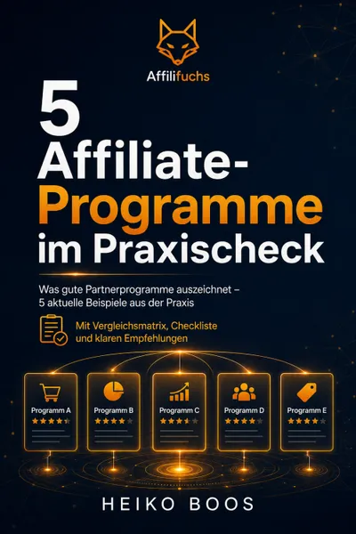

5 Affiliate-Programme im Praxischeck
Produktprofil · Marktplatz-Daten 2026-10-13 · Verkaufsseiten-Recherche 2026-10-13 · Kategorien: Online Marketing & E-Business, Social Media, Marketing Services
- 5 Affiliate-Programme im Praxischeck ist ein/e E-Book in Online Marketing & E-Business und Social Media, vertrieben über den Digistore24-Marktplatz von Anbieter HB1976, gelistet seit 2026-09-01.
- Listenpreis $17.77; Digistore24 meldet — Checkout-Konversion, — Stornierungsquote und 50 % Affiliate-Provision.
- Verdienst pro Verkauf (Affiliate): $8.89 (Anbieter-seitige Statistik, keine Prognose).
Interesse an 5 Affiliate-Programme im Praxischeck? Aktueller Preis, Boni und Garantiebedingungen finden Sie auf der offiziellen Seite des Anbieters:
Offizielle Verkaufsseite ansehen
Affiliate-Link (Werbung) — wir verdienen ggf. eine Provision, ohne Mehrkosten für Sie.

Marktplatz-Daten
| Produkttyp | E-Book |
|---|---|
| Preis | $17.77 (Single payment) |
| Affiliate-Provision | 50 % |
| Garantie/Rückgabe | Laut Verkaufsseite des Anbieters — vor dem Kauf auf der offiziellen Seite prüfen |
| Anbieter | HB1976 (gelistet seit 2026-09-01) |
| Marktplatz-Statistiken* | Checkout-Konversion — · Stornoquote — · Verdienst/Verkauf $8.89 |
* Anbieter-seitige Statistiken von Digistore24; sie hängen von der Traffic-Qualität ab und sind keine Prognose.
Marktplatz-Beschreibung des Anbieters
5 Affiliate-Programme im Praxischeck 50 % Provision auf Hauptprodukt, Add-ons & Upsells Bewirb einen praxisorientierten Vergleichs- und Entscheidungsguide für Affiliate Marketer, die Partnerprogramme nicht nur nach der Höhe der Provision auswählen möchten , sondern nach den Faktoren, die für eine sinnvolle Bewerbung tatsächlich wichtig sind. „5 Affiliate-Programme im Praxischeck“ analysiert fünf Partnerprogramme nach einem einheitlichen Bewertungsrahmen und zeigt Käufern gleichzeitig, wie sie künftig weitere Affiliate-Programme selbst systematisch prüfen können. Verkaufspreis: 17 € einmalig Affiliate-Provision: 50 % 50 % Provision auch auf Add-ons und Upsells. Verkaufsseite: https://affilifuchs.de/insider-report-lp/ Worum geht es im Produkt? Viele Affiliate Marketer schauen bei einem neuen Partnerprogramm zuerst auf eine Zahl: Wie hoch ist die Provision? 30 %? 50 %? Wiederkehrende Provision? Doch eine hohe Provision allein macht noch kein gutes Affiliate-Programm. Mindestens genauso wichtig sind Fragen wie: Passt das Produkt zur eigenen Zielgruppe? Ist das Angebot verständlich? Ist die Salespage überzeugend? Wie ist der Funnel aufgebaut? Wie funktioniert das Tracking? Welche Vergütungsstruktur gibt es? Ist das Produkt seriös? Passt der Anbieter zum eigenen Content? Gibt es Add-ons oder Upsells? Wie hoch ist das Vertrauen in Angebot und Anbieter? Genau hier setzt „5 Affiliate-Programme im Praxischeck“ an. Partnerprogramme systematisch bewerten Der Praxischeck zeigt anhand konkreter Beispiele, wie Affiliate-Programme strukturiert analysiert werden können. Der zentrale Ansatz lautet: Nicht die höchste Provision gewinnt automatisch. Ein Partnerprogramm muss zum Affiliate, zum Content und vor allem zur Zielgruppe passen. Deshalb werden verschiedene Faktoren gemeinsam betrachtet. Die wichtigsten Bewertungskriterien Käufer lernen, Partnerprogramme unter anderem nach folgenden Bereichen zu beurteilen: Produkt Was wird überhaupt verkauft? Ist der Nutzen klar? Passt das Produkt zu einem echten Problem oder Wunsch der Zielgruppe? Zielgruppe Für wen ist das Angebot gedacht? Passt diese Zielgruppe zur eigenen Website, Community oder Reichweite? Vergütung Wie ist das Provisionsmodell aufgebaut? Bewertet werden nicht nur Prozentwerte, sondern auch die wirtschaftliche Struktur des Angebots. Tracking Wie wird die Vermittlung technisch zugeordnet? Tracking ist ein zentraler Bestandteil eines Affiliate-Programms und sollte bei der Auswahl berücksichtigt werden. Funnel Was passiert nach dem Klick? Gibt es: Hauptprodukt Add-ons Order-Bumps Upsells weitere Angebote? Ein guter Affiliate sollte verstehen, wohin der vermittelte Besucher geführt wird. Salespage Auch das beworbene Angebot selbst wird betrachtet. Eine hohe Provision hilft wenig, wenn: das Angebot unverständlich ist die Verkaufsseite nicht überzeugt Produkt und Zielgruppe nicht zusammenpassen Vertrauen Affiliate Marketing basiert auch auf Empfehlungen. Deshalb ist die Frage wichtig: Kann und möchte ich dieses Angebot meiner eigenen Zielgruppe tatsächlich empfehlen? Fünf ausführliche Praxischecks Das E-Book enthält: 5 konkrete Affiliate-Programme im ausführlichen Praxisvergleich. Die Programme werden nicht lediglich vorgestellt. Sie werden nach einem einheitlichen Rahmen eingeordnet. Dadurch kann der Käufer Unterschiede wesentlich leichter erkennen und auf das eigene Affiliate-Projekt übertragen. Die große Vergleichsmatrix Alle fünf Programme werden zusätzlich in einer übersichtlichen Vergleichsmatrix gegenübergestellt. So können wichtige Unterschiede auf einen Blick erkannt werden. Beispielsweise bei: Produktart Zielgruppe Vergütungsmodell Funnel Tracking Salespage Affiliate-Eignung möglichen Stärken möglichen Einschränkungen Damit wird aus fünf Einzelanalysen ein echter Vergleich. Entscheidungsbaum für unterschiedliche Affiliate-Typen Nicht jedes Partnerprogramm passt zu jedem Affiliate. Deshalb enthält der Praxischeck zusätzlich einen Entscheidungsbaum. Der Käufer kann damit besser einschätzen, welche Arten von Programmen beispielsweise zu: SEO-Affiliates Bloggern Review-Seiten Content Creatorn Social-Media-Affiliates Nischenseitenbetreibern Newsletter-Affiliates Einsteigern passen können. Die Frage lautet damit nicht nur: „Ist dieses Partnerprogramm gut?“ Sondern: „Ist dieses Partnerprogramm für mein Projekt geeignet?“ Die 20-Punkte-Checkliste Der vielleicht wichtigste langfristige Nutzen des Produkts: Der Käufer bekommt eine 20-Punkte-Checkliste zur Bewertung weiterer Affiliate-Programme. Damit kann das erlernte System anschließend auf neue Angebote übertragen werden. Statt bei jedem neuen Programm wieder bei null anzufangen, gibt es einen festen Prüfrahmen. Der 10-Minuten-Schnelltest Nicht jedes Affiliate-Programm benötigt sofort eine umfangreiche Analyse. Deshalb enthält das Produkt zusätzlich einen: 10-Minuten-Schnelltest Damit kann ein neues Programm zunächst grob geprüft werden. Der Käufer kann so schneller entscheiden: genauer ansehen oder nicht weiterverfolgen. Das kann besonders hilfreich sein, wenn regelmäßig neue Partnerprogramme angeboten werden. Bonus: SaaS und wiederkehrende Provisionen Ein zusätzliches Bonuskapitel beschäftigt sich mit: SaaS-Angeboten und wiederkehrenden Affiliate-Provisionen. Wiederkehrende Provisionen wirken auf den ersten Blick besonders attraktiv. Aber auch hier sollte nicht nur auf die Vergütung geschaut werden. Entscheidend bleiben unter anderem: Produktqualität Zielgruppenfit Kundenbindung Preismodell Kündigungen Vertrauenswürdigkeit langfristiger Nutzen Das Bonuskapitel hilft dabei, solche Programme besser einzuordnen. Warum dieses Produkt für Affiliates interessant ist Das Produkt richtet sich direkt an Affiliate Marketer Die Zielgruppe ist sehr klar. Besonders interessant ist das Angebot für Menschen, die: neue Partnerprogramme suchen bestehende Programme vergleichen Affiliate-Produkte bewerten bessere Produktempfehlungen erstellen ihre Monetarisierung verbessern möchten Sehr niedrige Einstiegshürde Der komplette Praxischeck kostet: 17 € einmalig Es gibt: kein Abonnement keine monatlichen Gebühren keine laufenden Kosten Damit eignet sich das Produkt sehr gut als niedrigpreisiges Affiliate-Marketing-Angebot. 50 % Provision im Funnel Als Affiliate erhältst du: 50 % Provision auf das Hauptprodukt sowie: 50 % auf provisionsfähige Add-ons und Upsells. Damit kannst du nicht nur am Verkauf des Praxischecks verdienen, sondern auch an weiteren Käufen innerhalb des Funnels. Aktuelles Add-on Traffic³ – 5 Trafficquellen für dein Online-Business Add-on-Preis: 12 € Nachdem der Käufer passende Affiliate-Programme ausgewählt hat, stellt sich die nächste entscheidende Frage: Wie bekomme ich Besucher zu meinen Inhalten und Angeboten? Genau hier setzt Traffic³ an. Das E-Book behandelt fünf zentrale Trafficquellen: Google & SEO YouTube Social Media Communities & Partnerschaften Paid Traffic Die Kombination ist besonders logisch: „5 Affiliate-Programme im Praxischeck“ hilft dabei, geeignete Angebote auszuwählen. Traffic³ hilft anschließend dabei, passende Besucher aufzubauen. Auch auf dieses Add-on erhältst du: 50 % Affiliate-Provision. Für welche Zielgruppen eignet sich das Produkt? Der Praxischeck lässt sich besonders gut bei Zielgruppen rund um folgende Themen bewerben: Affiliate Marketing Partnerprogramme Affiliate-Programme Affiliate Marketing für Anfänger Online-Business Blogging SEO Nischenseiten Produktreviews Produktvergleiche Content Marketing SaaS wiederkehrende Provisionen Affiliate-Netzwerke Traffic Monetarisierung Besonders interessante Käufergruppen Affiliate-Marketing-Einsteiger Einsteiger wissen häufig noch nicht, woran sie ein gutes Partnerprogramm erkennen. Der Praxischeck liefert dafür einen strukturierten Bewertungsrahmen. Blogger und Website-Betreiber Wer bestehende Inhalte monetarisieren möchte, muss entscheiden, welche Angebote zur eigenen Zielgruppe passen. Review- und Vergleichsseiten Für diese Zielgruppe ist die Auswahl geeigneter Produkte besonders wichtig. Der Praxischeck hilft dabei, Programme nicht nur nach Provision, sondern nach Gesamtqualität zu beurteilen. SEO-Affiliates Wer organischen Traffic aufbaut, investiert häufig viel Zeit in Content. Deshalb sollte genau geprüft werden, welche Partnerprogramme in diesen Content integriert werden. Content Creator Auch YouTuber, Social-Media-Creator und andere Reichweitenanbieter können den Bewertungsrahmen auf ihre eigenen Empfehlungen übertragen. Fortgeschrittene Affiliate Marketer Der Praxischeck kann auch für bestehende Affiliates interessant sein, die ihre Programme systematischer auswählen oder ein vorhandenes Portfolio überprüfen möchten. Starke Werbewinkel für Affiliates „Welche Affiliate-Programme lohnen sich wirklich?“ Ein sehr starker Einstieg. Die Antwort des Produkts lautet bewusst nicht: „Dieses eine Programm ist das beste.“ Sondern: Lerne, selbst sinnvoll zu bewerten. „Schau nicht nur auf die Provision“ Wahrscheinlich einer der stärksten Werbewinkel überhaupt. Eine 50-%-Provision bedeutet wenig, wenn Produkt, Zielgruppe oder Funnel nicht passen. „So erkennst du gute Affiliate-Programme“ Sehr gut geeignet für Einsteiger-Content. „5 Partnerprogramme im direkten Praxisvergleich“ Ein konkret verständliches Leistungsversprechen. Der Käufer weiß sofort, was ihn erwartet. „Affiliate-Programm prüfen in 10 Minuten“ Der enthaltene Schnelltest eignet sich hervorragend als Werbeaufhänger. „Die 20-Punkte-Checkliste für Affiliate-Programme“ Ein weiterer sehr konkreter Marketingwinkel. Besonders interessant für Menschen, die regelmäßig neue Angebote bewerten. „Hohe Provision = gutes Partnerprogramm? Nicht unbedingt.“ Ein aufmerksamkeitsstarker Einstieg für: Blogartikel Social Posts Newsletter YouTube-Videos „Produkt, Funnel, Tracking oder Provision – was zählt wirklich?“ Sehr guter Content-Winkel, um mehrere Bewertungskriterien anzusprechen. „Wie du schlechte Partnerprogramme früher aussortierst“ Der Schnelltest und die Checkliste bieten dafür eine gute Grundlage. „Wiederkehrende Provisionen richtig bewerten“ Das SaaS-Bonuskapitel liefert einen zusätzlichen spezialisierten Werbewinkel. Die zentrale Verkaufsbotschaft Ein Affiliate-Programm sollte nicht so ausgewählt werden: Provision ansehen → Affiliate-Link holen → bewerben. Sondern: Produkt prüfen ↓ Zielgruppe prüfen ↓ Vergütung verstehen ↓ Tracking prüfen ↓ Funnel analysieren ↓ Salespage beurteilen ↓ Vertrauen bewerten ↓ erst dann entscheiden Genau dieses systematische Denken vermittelt der Praxischeck. Warum die höchste Provision nicht automatisch die beste Wahl ist Stell dir zwei Programme vor. Programm A zahlt 70 % Provision. Das Produkt passt aber kaum zur Zielgruppe und die Verkaufsseite überzeugt nicht. Programm B zahlt 30 %. Das Produkt löst ein konkretes Problem deiner Zielgruppe und lässt sich sinnvoll in deine Inhalte integrieren. Welches Angebot ist tatsächlich attraktiver? Genau solche Fragen sollte ein Affiliate beantworten können. Der Praxischeck liefert dafür einen Bewertungsrahmen. Was unterscheidet das Produkt von einer einfachen Partnerprogramm-Liste? Es handelt sich ausdrücklich nicht nur um: „Hier sind fünf Affiliate-Programme.“ Der entscheidende Mehrwert ist das übertragbare System. Der Käufer bekommt: fünf konkrete Beispiele eine Vergleichsmatrix einen Entscheidungsbaum eine 20-Punkte-Checkliste einen 10-Minuten-Schnelltest Dadurch kann er anschließend auch weitere Programme selbst beurteilen. Vorteile für Käufer Das Produkt hilft dabei, zentrale Fragen zu beantworten: Passt das Produkt zu meiner Zielgruppe? Ist die Provision wirklich attraktiv? Wie ist der Funnel aufgebaut? Wie wichtig ist die Salespage? Wie funktioniert das Tracking? Passt ein SaaS-Programm zu mir? Sind wiederkehrende Provisionen automatisch besser? Wie kann ich ein neues Partnerprogramm schnell vorprüfen? Wie vergleiche ich mehrere Programme objektiver? Damit wird aus einer spontanen Produktauswahl ein nachvollziehbarer Entscheidungsprozess. Deine Affiliate-Provision 50 % auf das Hauptprodukt 50 % auf Add-ons 50 % auf Upsells 50 % auf weitere provisionsfähige Angebote innerhalb des Funnels Das Hauptprodukt kostet: 17 € einmalig Das aktuelle Add-on Traffic³ kostet: 12 € einmalig Damit kann bereits beim ersten Kauf ein höherer Warenkorbwert entstehen. Produktdetails Produkt: 5 Affiliate-Programme im Praxischeck Preis: 17 € einmalig Produktart: Digitales E-Book / Praxischeck Enthalten: 5 ausführliche Partnerprogramm-Analysen Vergleich: große Vergleichsmatrix Entscheidungshilfe: Entscheidungsbaum für unterschiedliche Affiliate-Typen Arbeitsmittel: 20-Punkte-Checkliste Schnellprüfung: 10-Minuten-Schnelltest Bonus: SaaS und wiederkehrende Provisionen Abonnement: Nein Laufende Kosten: Nein Auslieferung: Digital über Digistore24 Affiliate-Provision: 50 % Provision auf Add-ons: 50 % Provision auf Upsells: 50 % Wichtiger Hinweis für Affiliates Bitte bewirb den Praxischeck seriös. Verzichte insbesondere auf Aussagen wie: „die fünf profitabelsten Affiliate-Programme“ „garantiert hohe Provisionen“ „garantierte Verkäufe“ „sicheres Affiliate-Einkommen“ „beste Affiliate-Programme garantiert“ „garantiert profitabel“ „passives Einkommen ohne Arbeit“ Ein Affiliate-Programm kann je nach: Zielgruppe Traffic Content Reichweite Wettbewerb Angebot Conversion Funnel Markt Umsetzung sehr unterschiedlich funktionieren. Das Produkt ist deshalb eine Bewertungs- und Entscheidungshilfe und enthält keine Garantie für bestimmte Klickzahlen, Conversion-Raten, Provisionen, Verkäufe, Umsätze oder Einnahmen.
Von der Verkaufsseite des Anbieters
Seitentitel: 5 Partnerprogramme für deinen großen Erfolg als Affiliate
Meta-Beschreibung: In diesem E-Book erfährst du, welches die besten Partnerprogramme sind, und wie auch Du viele Affiliate-Provisionen damit verdienst!
Hauptüberschrift
Welche Affiliate-Programme lohnen einen genaueren Blick?
Abschnitts-Überschriften
- Eine hohe Provision macht noch kein gutes Partnerprogramm.
- Diese Partnerprogramme schauen wir uns an
- Du lernst, Partnerprogramme selbst zu beurteilen.
- Praxischeck, Vergleich und Arbeitswerkzeug
- Welches Modell passt zu welchem Affiliate?
- Prüfe dein nächstes Partnerprogramm selbst.
- Das E-Book passt besonders gut, wenn ...
- Erst der Mensch. Dann das Problem. Dann das Produkt. Dann die Provision.
- Heiko Boos · Affilifuchs
- Lerne, gute Partnerprogramme selbst zu erkennen.
Einstiegstext
Statt einer weiteren Liste mit angeblichen „Mega-Programmen“ bekommst du fünf aktuelle Partnerprogramme nach denselben Kriterien analysiert – inklusive Stärken, Schwächen, Provisionen, Funnelmodellen und konkreten Einsatzmöglichkeiten.
Solche Zahlen sehen attraktiv aus – sagen allein aber erstaunlich wenig darüber aus, ob sich ein Angebot tatsächlich für deine Website und deine Zielgruppe eignet.
Entscheidend ist das Zusammenspiel aus Produkt, Zielgruppe, Vergütung, Tracking, Salespage und Vertrauen.
Nicht als Rangliste, sondern als fünf Beispiele dafür, wie unterschiedlich Affiliate-Programme aufgebaut sein können.
Fragen, die die Verkaufsseite beantwortet
- Ist das E-Book für Anfänger geeignet?
- Sind das die fünf „besten“ Affiliate-Programme?
- Sind die Angaben aktuell?
- Bekomme ich konkrete Affiliate-Links?
- Garantiert mir das E-Book Affiliate-Einnahmen?
- Ist das ein Abo?
Recherche-Methode: rohes HTML · 1104 Wörter · Qualität: rich · recherchiert am 2026-10-13. Vollständige Recherche-Datei (MD) ↗
Wie Produkte dieser Art geliefert werden
Allgemeiner Hinweis zu diesem Produkttyp (keine anbieterspezifische Anleitung): E-Books auf Digistore24 werden als digitaler Download geliefert (meist PDF/EPUB): direkt nach dem Checkout erhalten Sie einen Downloadlink oder Mitgliederzugang und können auf jedem Gerät lesen. Für die genaue Anwendung von 5 Affiliate-Programme im Praxischeck sind die offizielle Verkaufsseite und die enthaltenen Materialien maßgeblich.
Gut zu wissen
- Keine Garantie-Formulierung in unserer Recherche gefunden — bestätigen Sie das Rückgabefenster auf der offiziellen Seite, bevor Sie kaufen.
- Marktplatz-Zahlen (Preis, Provision, Konversion, Stornoquote) — Quelle: offizielle Digistore24-Marktplatz-API (Affiliate-Sicht), Stand 2026-10-13. Gegenprüfung: Marktplatz-Suche nach Produkt-ID 470189.
- Verkaufsseiten-Zitate — Quelle: https://affilifuchs.de/insider-report-lp/, abgerufen 2026-10-13 (Methode: rohes HTML). Verify: offizielle Seite öffnen.
- Garantie / Rückgabe — vom Anbieter festgelegt; vor dem Kauf auf der Verkaufsseite bestätigen.
- Nicht von uns geprüft: Produktqualität, Ergebnisse, Testimonials — kein Praxistest für dieses Listing durchgeführt.
Häufige Fragen zu 5 Affiliate-Programme im Praxischeck
Antworten aus dem Marktplatz-Snapshot (2026-10-13) und der Verkaufsseiten-Recherche (2026-10-13); Anbieteraussagen sind inline gekennzeichnet.
Was ist 5 Affiliate-Programme im Praxischeck?
5 Affiliate-Programme im Praxischeck ist ein Angebot des Typs „E-Book" im Digistore24-Marktplatz, Anbieter: HB1976, gelistet seit 2026-09-01. Eingepflegt unter Online-Marketing & E-Business und Social Media. Digistore24 wickelt Checkout, Lieferung und Rückgaben ab.
Wie viel kostet 5 Affiliate-Programme im Praxischeck?
Der Digistore24-Marktplatz listet es für $17.77 (single payment). Preise legt der Anbieter fest und können sich ändern — der Marktplatz-Eintrag oben zeigt den Schnappschuss; die offizielle Verkaufsseite zeigt den aktuellen Preis.
Gibt es eine Geld-zurück-Garantie für 5 Affiliate-Programme im Praxischeck?
Unsere Verkaufsseiten-Recherche hat keine explizite Garantie-Formulierung gefunden. Viele Digistore24-Produkte bieten 60 Tage Geld-zurück, aber das legt jeder Anbieter selbst fest — bestätigen Sie es auf der offiziellen Verkaufsseite, bevor Sie kaufen.
Ist 5 Affiliate-Programme im Praxischeck seriös?
Wir bewerten keine Seriosität — wir veröffentlichen überprüfbare Zahlen: Anbieter HB1976 (gelistet seit 2026-09-01), Checkout-Konversion —, Stornoquote —, Affiliate-Verdienst/Verkauf $8.89 (alles Anbieter-seitige Marktplatz-Statistiken). Lesen Sie unsere 6-Punkte-Bewertungsmethode und entscheiden Sie anhand der Zahlen — oder diskutieren Sie 5 Affiliate-Programme im Praxischeck auf GitHub.
Wo kann ich 5 Affiliate-Programme im Praxischeck sicher kaufen?
Nur über die offizielle Verkaufsseite, die auf dieser Seite verlinkt ist (Checkout und Rückgaben laufen über Digistore24). Prüfen Sie dort Preis und Garantie vor der Bestellung. Der Link ist ein Affiliate-Link — der Kauf unterstützt diese Website ohne Mehrkosten für Sie.
Wie erhalte ich 5 Affiliate-Programme im Praxischeck nach der Zahlung?
Der Checkout läuft über Digistore24: Nach der Zahlung erhalten Sie Ihren Zugang oder Download per E-Mail und in Ihrem Digistore24-Kundenkonto. Lieferdetails für diesen Produkttyp: E-Books auf Digistore24 werden als digitaler Download geliefert (meist PDF/EPUB): direkt nach dem Checkout erhalten Sie einen Downloadlink oder Mitgliederzugang und können auf jedem Gerät lesen. Bei Problemen kann der Digistore24-Käufersupport Ihre Bestellung wiederherstellen.
Alle 50 Käuferfragen zu Online-Marketing & E-Business — das komplette Kategorie-FAQ.
5 Affiliate-Programme im Praxischeck auf Reddit diskutieren
In Community-Threads vergleichen echte Käufer Erfahrungen. Wir verlinken Communities, keine einzelnen Posts — Threads verschwinden, Subreddits bleiben:
- r/Unternehme — deutschsprachige Community mit Diskussionen zu online marketing & e-business.
- r/Vertrieb — deutschsprachige Community mit Diskussionen zu online marketing & e-business.
- Reddit-Suche nach „5 Affiliate-Programme im Praxischeck" — Live-Ergebnisse, von uns nicht beeinflusst.
- Top-„Erfahrungs"-Treffer dieses Jahr — selbst nach Aktualität filtern.
Passendes auf Amazon.de
Physische Produkte und Zubehör, die häufig zusammen mit 5 Affiliate-Programme im Praxischeck gekauft werden:
- Marketing Bücher auf Amazon.de — Top-Ergebnisse, Amazon-Ranking.
- Bestseller: Marketing Bücher — live Liste von Amazon, von uns nicht kuratiert.
Werbung: Als Amazon-Partner verdient DigistorePicks DE an qualifizierten Käufen (Partner-tag adminstorede-21). Amazon setzt eigene Preise und Provisionen (niedrige einstellige Prozente — weit unter den 30–75% der Digistore24-Anbieter). Amazon ist ein Convenience-Angebot für Sachprodukte, kein Ersatz für das digitale Produkt oben.
Ähnliche Angebote in Online-Marketing & E-Business

SHOWUP 3 Monate Strategie- und Umsetzungsbegleitung für dein Business. Du steckst Zeit und Arbeit in deinen Content, feilst an Angeboten und denkst über deine P

Bis zu 1.046 € Provision pro Empfehlung — mit einem Produkt, das sich von selbst verkauft. Stell dir vor, du empfiehlst ein Produkt, das nicht nur gut konvertie

Verdiene 50% Provision mit der #1 Masterclass für Online-Kurs-Business Promote das kostenlose Online Training „Online Kurse erstellen und passiv verkaufen mit K

Das ist die mächtigste Social-Media-Kooperation, die der deutschsprachige Raum jemals gesehen hat. Wenn die TikTok-Ikone Social Media Buddy , der den Algorithmu
Weitere Angebote von HB1976
Gesamtes Sortiment: HB1976 Anbieter-Hub — alle Listings mit Marktplatz-Daten.

Affiliate Marketing mit KI – Praxisguide 2026 50 % Provision auf Produkt, Add-ons & Upsells Bewirb einen praxisorientierten Guide für Affiliate Marketer, di

Affiliate Marketing Praxisplan – 5 Strategien für den Start 50 % Provision auf Hauptprodukt, Add-ons & Upsells Bewirb einen praxisorientierten Strategie-Gui

1000+ KI-Prompts für Affiliate Marketing 50 % Provision auf Hauptprodukt, Add-ons & Upsells Bewirb eine umfangreiche KI-Prompt-Bibliothek speziell für Affil

50 % Provision auf Hauptprodukt, Add-ons & Upsells Bewirb einen praxisorientierten Traffic-Guide für Online-Unternehmer, Affiliate Marketer, Blogger und Cre
5 Affiliate-Programme im Praxischeck ist auch gelistet in
Social Media (391 Produkte) · Marketing-Dienstleistungen (287 Produkte)
Ähnliche Preislage in Online-Marketing & E-Business

EPC Community Abo: Über 50 Mitglieder im 1. Monat! Produkt-Highlight: Wie ich 868 € in 1 Woche mit 3 E-Mail-Swipes machte. Jede Woche exakte Praxis-Mails, Live-

Empfehle "TikTok Marketing Insider-Hacks" und verdiene bis zu 40% jeden Monat an Provisionen! Du kannst die "TikTok Marketing Insider-Hacks"

100 % Provision auf den Einstieg bewusst so geplant. Der Easy Business Kickstart ist Teil meines „Hier verdienst du“-Konzeptes . Ich weiß aus eigener Erfahrung,

Worum geht’s? „More than MONEY. More than HYPE.“ ist ein kompaktes, klares E-Book für Menschen, die Geld verdienen wollen (Online/Side Hustle/Selbstständigkeit)
Ähnliche Suchanfragen
Wo Sie es sich ansehen können
Wo Sie es sich ansehen können
Aktuelle Preise, Garantie und Boni finden Sie auf der offiziellen Verkaufsseite:
Offizielle Verkaufsseite ansehen
Das ist ein Affiliate-Link (Werbung) — kaufen Sie darüber, verdienen wir ggf. eine Provision, ohne Mehrkosten für Sie.
Quellen & weiterführende Informationen
- Offizielle Verkaufsseite (aktueller Preis, Garantie, Boni): affilifuchs.de/insider-report-lp/ (Affiliate-Link)
- Öffentliche Digistore24-Produktseite: digistore24.com/product/470189
- Vollständige Recherche-Datei (Markdown, versioniert): content/products/58825-5-affiliate-programme-im-praxischeck.md
- Affiliate-Supportseite des Anbieters: affilifuchs.de/partnerprogramm/
- Marktplatz-Kategorie: Online-Marketing & E-Business
Wie wir Produkte wie 5 Affiliate-Programme im Praxischeck bewerten
Sechs Prüfungen, ausschließlich mit offiziellen Marktplatz-Zahlen. Die vollständige Bewertungsmethode lesen · unsere Recherche-Standards & Kennzeichnung.
Fragen oder eigene Erfahrungen mit 5 Affiliate-Programme im Praxischeck?
Praxis-Tests veröffentlichen wir erst, nachdem wir ein Produkt selbst gekauft haben — aber Ihre Erfahrung hilft anderen Lesern: Diskussion zu 5 Affiliate-Programme im Praxischeck auf GitHub starten/verfolgen. Falsche Zahl gefunden? Korrektur melden — jede Seite zeigt ihre Datenstände, Korrekturen gelten für die ganze Website.